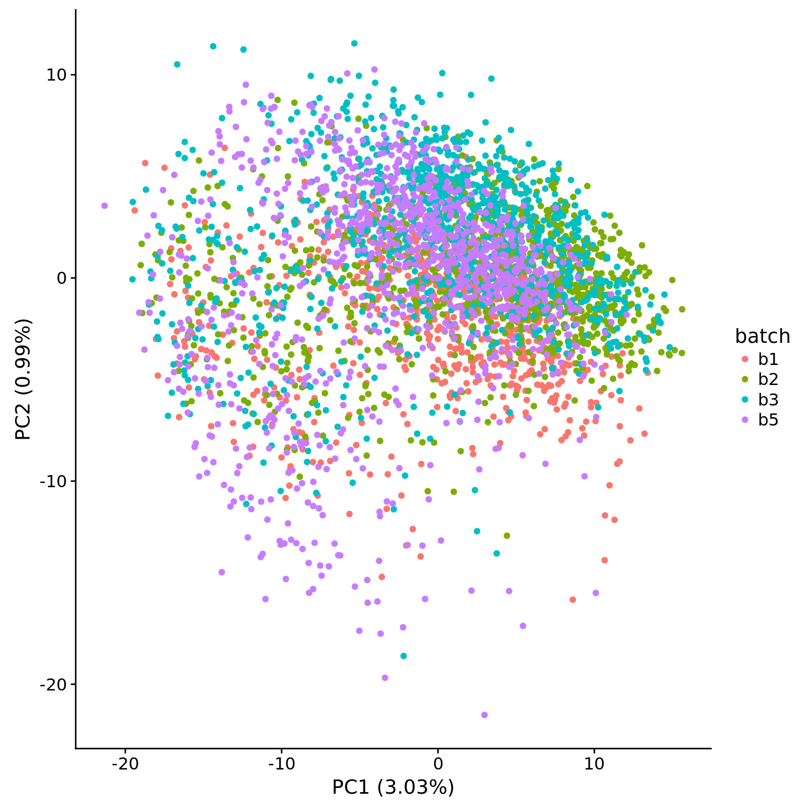
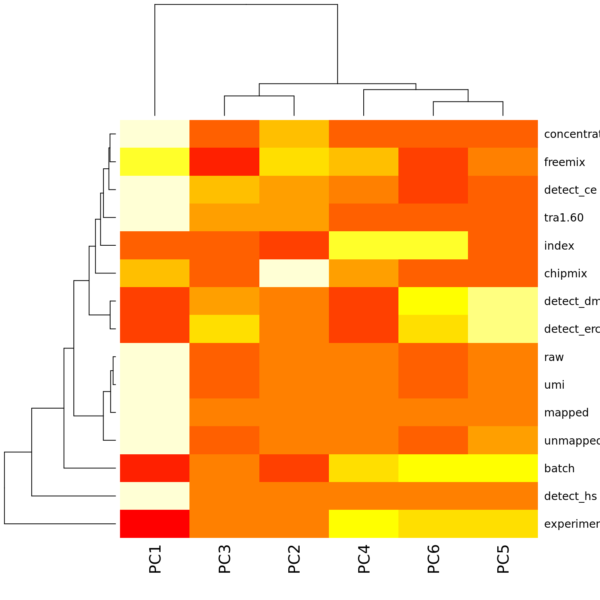

Last updated: 2018-01-29
Code version: f6b7f76
library("cowplot")
library("dplyr")
library("DT")
library("edgeR")
library("ggplot2")
library("knitr")
theme_set(theme_cowplot())
source("../code/functions.R")
library("Biobase") # has to be loaded last to use `combine`Import data.
eset <- readRDS("../data/eset.rds")
dim(eset)Features Samples
54792 4992 Only keep high-quality single cells.
quality <- read.table("../data/quality-single-cells.txt", stringsAsFactors = FALSE)
colnames(quality) <- c("sample", "quality")
eset <- eset[, quality$quality]
dim(eset)Features Samples
54792 3910 Isolate the human genes.
eset <- eset[fData(eset)$source == "H. sapiens", ]
dim(eset)Features Samples
20327 3910 Remove zeros.
eset <- eset[rowSums(exprs(eset)) != 0, ]
dim(eset)Features Samples
19656 3910 Only keep genes which are observed in at least 50% of the samples.
# Function `present` is defined in ../code/functions.R
eset <- eset[apply(exprs(eset), 1, present), ]
dim(eset)Features Samples
6979 3910 Convert to log2 counts per million.
log2cpm <- cpm(exprs(eset), log = TRUE)
dim(log2cpm)[1] 6979 3910Calculate coefficient of variation.
compute_cv <- function(x) sd(x) / mean(x)
cv <- apply(log2cpm, 1, compute_cv)
summary(cv) Min. 1st Qu. Median Mean 3rd Qu. Max.
0.02658 0.19235 0.28446 0.25889 0.33827 0.42273 Select 25% of genes with highest CV.
cutoff <- 0.25
summary(cv[rank(cv) / length(cv) > 1 - cutoff]) Min. 1st Qu. Median Mean 3rd Qu. Max.
0.3383 0.3483 0.3560 0.3558 0.3628 0.4227 variable <- log2cpm[rank(cv) / length(cv) > 1 - cutoff, ]
dim(variable)[1] 1745 3910pca <- run_pca(variable)
head(pca$explained * 100)[1] 3.0263690 0.9880011 0.6295410 0.4630944 0.3477797 0.3030006plot_pca(pca$PCs, pcx = 1, pcy = 2, explained = pca$explained,
metadata = pData(eset), color = "batch")
Calculate the adjusted R-squared for various covariates and the first 6 principal components.
get_r2 <- function(x, y) {
stopifnot(length(x) == length(y))
model <- lm(y ~ x)
stats <- summary(model)
return(stats$adj.r.squared)
}
covariates <- pData(eset) %>% select(experiment, batch, concentration, tra1.60,
index, raw:unmapped, starts_with("detect"),
chipmix, freemix)
pcs <- pca$PCs[, 1:6]
r2 <- matrix(NA, nrow = ncol(covariates), ncol = ncol(pcs),
dimnames = list(colnames(covariates), colnames(pcs)))
for (cov in colnames(covariates)) {
for (pc in colnames(pcs)) {
r2[cov, pc] <- get_r2(covariates[, cov], pcs[, pc])
}
}PC1 is most highly correlated with the percentage of detected genes and other metrics of sequencing depth, which is consistent with the observations of Hicks et al., 2017. PCs 2-6 most highly correlate with variation across C1 chips.
heatmap(r2)
datatable(r2)Here is the description of all the experimental variables that were correlated with the PCs.
kable(varMetadata(eset)[colnames(covariates), , drop = FALSE])| labelDescription | |
|---|---|
| experiment | ID of C1 chip (i.e. processing date in MMDDYYYY) |
| batch | Batch the C1 chip was processed in (b1, b2, …) |
| concentration | The cDNA concentration of the well prior to library prep |
| tra1.60 | Did the cell stain positive for TRA-1-60? (test of pluripotency) |
| index | The set of indexes used for library prep (of the 3 sets of 96) |
| raw | The number of raw reads |
| umi | The number of reads with a valid UMI |
| mapped | The number of reads with a valid UMI that mapped to a genome |
| unmapped | The number of reads with a valid UMI that did not map to a genome |
| detect_ce | The number of C. elegans genes with at least one molecule |
| detect_dm | The number of D. melanogaster genes with at least one molecule |
| detect_ercc | The number of ERCC genes with at least one molecule |
| detect_hs | The number of H. sapiens genes with at least one molecule |
| chipmix | verifyBamID: chipmix is a metric for detecting sample swaps |
| freemix | verifyBamID: freemix is a measure of contamination. 0 == good & 0.5 == bad |
sessionInfo()R version 3.4.1 (2017-06-30)
Platform: x86_64-pc-linux-gnu (64-bit)
Running under: Scientific Linux 7.2 (Nitrogen)
Matrix products: default
BLAS: /project2/gilad/jdblischak/miniconda3/envs/scqtl/lib/R/lib/libRblas.so
LAPACK: /project2/gilad/jdblischak/miniconda3/envs/scqtl/lib/R/lib/libRlapack.so
locale:
[1] LC_CTYPE=en_US.UTF-8 LC_NUMERIC=C
[3] LC_TIME=en_US.UTF-8 LC_COLLATE=en_US.UTF-8
[5] LC_MONETARY=en_US.UTF-8 LC_MESSAGES=en_US.UTF-8
[7] LC_PAPER=en_US.UTF-8 LC_NAME=C
[9] LC_ADDRESS=C LC_TELEPHONE=C
[11] LC_MEASUREMENT=en_US.UTF-8 LC_IDENTIFICATION=C
attached base packages:
[1] parallel methods stats graphics grDevices utils datasets
[8] base
other attached packages:
[1] testit_0.6 Biobase_2.38.0 BiocGenerics_0.24.0
[4] knitr_1.16 edgeR_3.20.1 limma_3.34.1
[7] DT_0.2 dplyr_0.7.4 cowplot_0.9.1
[10] ggplot2_2.2.1
loaded via a namespace (and not attached):
[1] Rcpp_0.12.13 highr_0.6 compiler_3.4.1 git2r_0.19.0
[5] plyr_1.8.4 bindr_0.1 tools_3.4.1 digest_0.6.12
[9] jsonlite_1.4 evaluate_0.10.1 tibble_1.3.3 gtable_0.2.0
[13] lattice_0.20-34 pkgconfig_2.0.1 rlang_0.1.2 yaml_2.1.14
[17] bindrcpp_0.2 stringr_1.2.0 htmlwidgets_0.9 locfit_1.5-9.1
[21] rprojroot_1.2 grid_3.4.1 glue_1.1.1 R6_2.2.0
[25] rmarkdown_1.6 magrittr_1.5 backports_1.0.5 scales_0.5.0
[29] htmltools_0.3.6 assertthat_0.1 colorspace_1.3-2 labeling_0.3
[33] stringi_1.1.2 lazyeval_0.2.0 munsell_0.4.3 This R Markdown site was created with workflowr